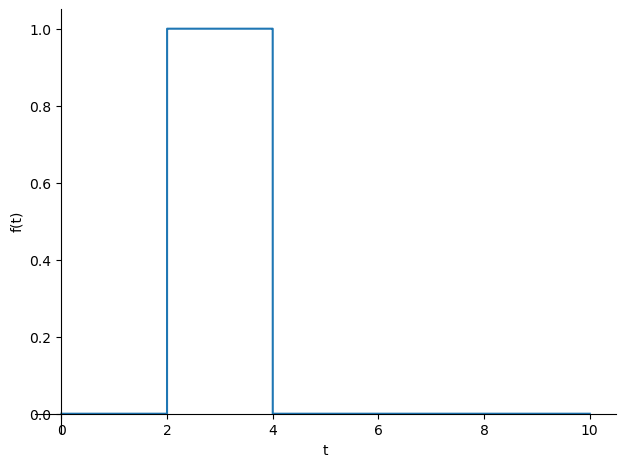
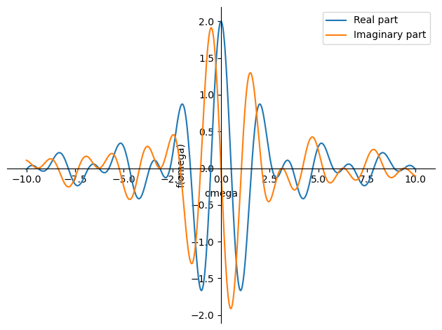
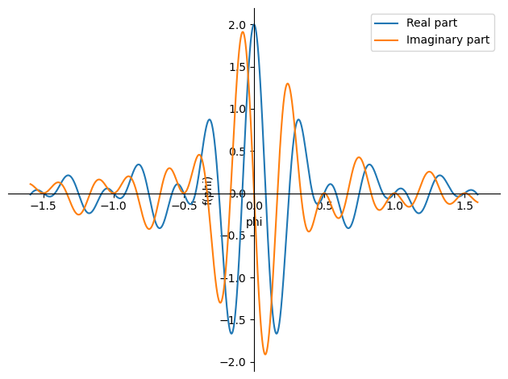
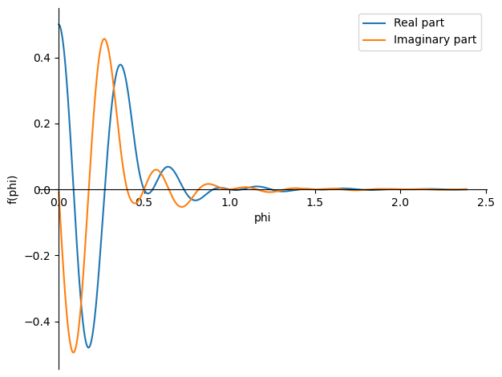

CIE_4140_Lecture_3_4_Python
Contents
CIE_4140_Lecture_3_4_Python#
Integral Fourier Transform and frequency-domain analysis#
import sympy as sp
tau= sp.symbols('tau',real=True,positive = True)
t = sp.symbols('t',real=True)
Example Function of Time
f = sp.Heaviside(t-tau)-sp.Heaviside(t-2*tau)
sp.plot(f.subs(tau,2),(t,0,10));

omega = sp.symbols('omega',real=True,positive=True)
phi = sp.symbols('phi',real=True,positive=True)
f_omega = sp.integrate(f*sp.exp(-sp.I*omega*t), (t,-sp.oo,sp.oo))
f_phi = sp.fourier_transform(f,t,phi)
f_omega = sp.simplify(f_omega)
f_phi = sp.simplify(f_phi)
display(f_omega)
display(f_phi)
\[\displaystyle \frac{i \left(1 - e^{i \omega \tau}\right) e^{- 2 i \omega \tau}}{\omega}\]
\[\displaystyle \frac{i \left(1 - e^{2 i \pi \phi \tau}\right) e^{- 4 i \pi \phi \tau}}{2 \pi \phi}\]
Another definition for the fourier transformation is used by sympy
p0 = sp.plotting.plot(sp.re(f_omega.subs([(tau,2)])),(omega,-10,10),label='Real part' ,legend=True,show=False,adaptive=False,nb_of_points=3000)
p1 = sp.plotting.plot(sp.im(f_omega.subs([(tau,2)])),(omega,-10,10),label='Imaginary part',legend=True,show=False,adaptive=False,nb_of_points=3000)
p0.append(p1[0])
p0.show()
p0 = sp.plotting.plot(sp.re(f_phi.subs([(tau,2)])),(phi,-10/2/sp.pi,10/2/sp.pi),label='Real part' ,legend=True,show=False,adaptive=False,nb_of_points=3000)
p1 = sp.plotting.plot(sp.im(f_phi.subs([(tau,2)])),(phi,-10/2/sp.pi,10/2/sp.pi),label='Imaginary part',legend=True,show=False,adaptive=False,nb_of_points=3000)
p0.append(p1[0])
p0.show()


x = sp.symbols('x',cls = sp.Function)
m, c, k = sp.symbols('m, c, k',real=True,positive=True)
Equation_of_Motion = m*sp.diff(x(t),t,2)+c*sp.diff(x(t),t)+k*x(t)-f
display(Equation_of_Motion)
\[\displaystyle c \frac{d}{d t} x{\left(t \right)} + k x{\left(t \right)} + m \frac{d^{2}}{d t^{2}} x{\left(t \right)} + \theta\left(t - 2 \tau\right) - \theta\left(t - \tau\right)\]
sp.fourier_transform(Equation_of_Motion,t,phi)
---------------------------------------------------------------------------
TypeError Traceback (most recent call last)
~\AppData\Local\Temp\ipykernel_13648\1221906460.py in <module>
----> 1 sp.fourier_transform(Equation_of_Motion,t,phi)
~\Anaconda3\lib\site-packages\sympy\integrals\transforms.py in fourier_transform(f, x, k, **hints)
2256 mellin_transform, laplace_transform
2257 """
-> 2258 return FourierTransform(f, x, k).doit(**hints)
2259
2260
~\Anaconda3\lib\site-packages\sympy\integrals\transforms.py in doit(self, **hints)
179 if fn.is_Add:
180 hints['needeval'] = needeval
--> 181 res = [self.__class__(*([x] + list(self.args[1:]))).doit(**hints)
182 for x in fn.args]
183 extra = []
~\Anaconda3\lib\site-packages\sympy\integrals\transforms.py in <listcomp>(.0)
179 if fn.is_Add:
180 hints['needeval'] = needeval
--> 181 res = [self.__class__(*([x] + list(self.args[1:]))).doit(**hints)
182 for x in fn.args]
183 extra = []
~\Anaconda3\lib\site-packages\sympy\integrals\transforms.py in doit(self, **hints)
172 hints['simplify'] = simplify
173
--> 174 fn, T = self._try_directly(**hints)
175
176 if T is not None:
~\Anaconda3\lib\site-packages\sympy\integrals\transforms.py in _try_directly(self, **hints)
136 if try_directly:
137 try:
--> 138 T = self._compute_transform(self.function,
139 self.function_variable, self.transform_variable, **hints)
140 except IntegralTransformError:
~\Anaconda3\lib\site-packages\sympy\integrals\transforms.py in _compute_transform(self, f, x, k, **hints)
2188
2189 def _compute_transform(self, f, x, k, **hints):
-> 2190 return _fourier_transform(f, x, k,
2191 self.a(), self.b(),
2192 self.__class__._name, **hints)
~\Anaconda3\lib\site-packages\sympy\integrals\transforms.py in wrapper(noconds, *args, **kwargs)
254 @wraps(func)
255 def wrapper(*args, noconds=default, **kwargs):
--> 256 res = func(*args, **kwargs)
257 if noconds:
258 return res[0]
~\Anaconda3\lib\site-packages\sympy\integrals\transforms.py in _fourier_transform(f, x, k, a, b, name, simplify)
2162 return _simplify(F, simplify), S.true
2163
-> 2164 integral_f = integrate(f, (x, S.NegativeInfinity, S.Infinity))
2165 if integral_f in (S.NegativeInfinity, S.Infinity, S.NaN) or integral_f.has(Integral):
2166 raise IntegralTransformError(name, f, 'function not integrable on real axis')
~\Anaconda3\lib\site-packages\sympy\integrals\integrals.py in integrate(meijerg, conds, risch, heurisch, manual, *args, **kwargs)
1564
1565 if isinstance(integral, Integral):
-> 1566 return integral.doit(**doit_flags)
1567 else:
1568 new_args = [a.doit(**doit_flags) if isinstance(a, Integral) else a
~\Anaconda3\lib\site-packages\sympy\integrals\integrals.py in doit(self, **hints)
710 try:
711 evalued = Add(*others)._eval_interval(x, a, b)
--> 712 evalued_pw = piecewise_fold(Add(*piecewises))._eval_interval(x, a, b)
713 function = uneval + evalued + evalued_pw
714 except NotImplementedError:
~\Anaconda3\lib\site-packages\sympy\functions\elementary\piecewise.py in _eval_interval(self, sym, a, b, _first)
647 # TODO simplify hi <= upto
648 return Piecewise((sum, hi <= upto), (Undefined, True))
--> 649 sum += abei[i][-2]._eval_interval(x, a, b)
650 upto = b
651 return sum
~\Anaconda3\lib\site-packages\sympy\core\expr.py in _eval_interval(self, x, a, b)
942 return S.Zero
943
--> 944 A = _eval_endpoint(left=True)
945 if A is S.NaN:
946 return A
~\Anaconda3\lib\site-packages\sympy\core\expr.py in _eval_endpoint(left)
931 S.ComplexInfinity, AccumBounds):
932 if (a < b) != False:
--> 933 C = limit(self, x, c, "+" if left else "-")
934 else:
935 C = limit(self, x, c, "-" if left else "+")
~\Anaconda3\lib\site-packages\sympy\series\limits.py in limit(e, z, z0, dir)
65 """
66
---> 67 return Limit(e, z, z0, dir).doit(deep=False)
68
69
~\Anaconda3\lib\site-packages\sympy\series\limits.py in doit(self, **hints)
304 newe = e.subs(z, z + z0)
305 try:
--> 306 coeff, ex = newe.leadterm(z, cdir=cdir)
307 except (ValueError, NotImplementedError, PoleError):
308 # The NotImplementedError catching is for custom functions
~\Anaconda3\lib\site-packages\sympy\core\expr.py in leadterm(self, x, logx, cdir)
3478 from .symbol import Dummy
3479 from sympy.functions.elementary.exponential import log
-> 3480 l = self.as_leading_term(x, logx=logx, cdir=cdir)
3481 d = Dummy('logx')
3482 if l.has(log(x)):
~\Anaconda3\lib\site-packages\sympy\core\cache.py in wrapper(*args, **kwargs)
68 def wrapper(*args, **kwargs):
69 try:
---> 70 retval = cfunc(*args, **kwargs)
71 except TypeError as e:
72 if not e.args or not e.args[0].startswith('unhashable type:'):
~\Anaconda3\lib\site-packages\sympy\core\expr.py in as_leading_term(self, logx, cdir, *symbols)
3441 if x not in self.free_symbols:
3442 return self
-> 3443 obj = self._eval_as_leading_term(x, logx=logx, cdir=cdir)
3444 if obj is not None:
3445 from sympy.simplify.powsimp import powsimp
~\Anaconda3\lib\site-packages\sympy\core\mul.py in _eval_as_leading_term(self, x, logx, cdir)
2020
2021 def _eval_as_leading_term(self, x, logx=None, cdir=0):
-> 2022 return self.func(*[t.as_leading_term(x, logx=logx, cdir=cdir) for t in self.args])
2023
2024 def _eval_conjugate(self):
~\Anaconda3\lib\site-packages\sympy\core\mul.py in <listcomp>(.0)
2020
2021 def _eval_as_leading_term(self, x, logx=None, cdir=0):
-> 2022 return self.func(*[t.as_leading_term(x, logx=logx, cdir=cdir) for t in self.args])
2023
2024 def _eval_conjugate(self):
~\Anaconda3\lib\site-packages\sympy\core\cache.py in wrapper(*args, **kwargs)
68 def wrapper(*args, **kwargs):
69 try:
---> 70 retval = cfunc(*args, **kwargs)
71 except TypeError as e:
72 if not e.args or not e.args[0].startswith('unhashable type:'):
~\Anaconda3\lib\site-packages\sympy\core\expr.py in as_leading_term(self, logx, cdir, *symbols)
3441 if x not in self.free_symbols:
3442 return self
-> 3443 obj = self._eval_as_leading_term(x, logx=logx, cdir=cdir)
3444 if obj is not None:
3445 from sympy.simplify.powsimp import powsimp
~\Anaconda3\lib\site-packages\sympy\functions\special\hyper.py in _eval_as_leading_term(self, x, logx, cdir)
697 def _eval_as_leading_term(self, x, logx=None, cdir=0):
698 from sympy.simplify.hyperexpand import hyperexpand
--> 699 return hyperexpand(self).as_leading_term(x, logx=logx, cdir=cdir)
700
701 def integrand(self, s):
~\Anaconda3\lib\site-packages\sympy\core\cache.py in wrapper(*args, **kwargs)
68 def wrapper(*args, **kwargs):
69 try:
---> 70 retval = cfunc(*args, **kwargs)
71 except TypeError as e:
72 if not e.args or not e.args[0].startswith('unhashable type:'):
~\Anaconda3\lib\site-packages\sympy\core\expr.py in as_leading_term(self, logx, cdir, *symbols)
3441 if x not in self.free_symbols:
3442 return self
-> 3443 obj = self._eval_as_leading_term(x, logx=logx, cdir=cdir)
3444 if obj is not None:
3445 from sympy.simplify.powsimp import powsimp
~\Anaconda3\lib\site-packages\sympy\functions\elementary\piecewise.py in _eval_as_leading_term(self, x, logx, cdir)
313 def _eval_as_leading_term(self, x, logx=None, cdir=0):
314 for e, c in self.args:
--> 315 if c == True or c.subs(x, 0) == True:
316 return e.as_leading_term(x)
317
~\Anaconda3\lib\site-packages\sympy\core\basic.py in subs(self, *args, **kwargs)
991 rv = self
992 for old, new in sequence:
--> 993 rv = rv._subs(old, new, **kwargs)
994 if not isinstance(rv, Basic):
995 break
~\Anaconda3\lib\site-packages\sympy\core\cache.py in wrapper(*args, **kwargs)
68 def wrapper(*args, **kwargs):
69 try:
---> 70 retval = cfunc(*args, **kwargs)
71 except TypeError as e:
72 if not e.args or not e.args[0].startswith('unhashable type:'):
~\Anaconda3\lib\site-packages\sympy\core\basic.py in _subs(self, old, new, **hints)
1105 rv = self._eval_subs(old, new)
1106 if rv is None:
-> 1107 rv = fallback(self, old, new)
1108 return rv
1109
~\Anaconda3\lib\site-packages\sympy\core\basic.py in fallback(self, old, new)
1082 args[i] = arg
1083 if hit:
-> 1084 rv = self.func(*args)
1085 hack2 = hints.get('hack2', False)
1086 if hack2 and self.is_Mul and not rv.is_Mul: # 2-arg hack
~\Anaconda3\lib\site-packages\sympy\core\relational.py in __new__(cls, lhs, rhs, **options)
832 for me in (lhs, rhs):
833 if me.is_extended_real is False:
--> 834 raise TypeError("Invalid comparison of non-real %s" % me)
835 if me is S.NaN:
836 raise TypeError("Invalid NaN comparison")
TypeError: Invalid comparison of non-real zoo
So Homogeneous equation of motion cannot be Fourier transformed
Equation_of_Motion_in_frequency_domain_homogeneous = sp.fourier_transform(m*sp.diff(x(t),t,2)+c*sp.diff(x(t),t)+k*x(t),t,phi)
Equation_of_Motion_in_frequency_domain = Equation_of_Motion_in_frequency_domain_homogeneous - f_phi
display(Equation_of_Motion_in_frequency_domain)
\[\displaystyle c \mathcal{F}_{t}\left[\frac{d}{d t} x{\left(t \right)}\right]\left(\phi\right) + k \mathcal{F}_{t}\left[x{\left(t \right)}\right]\left(\phi\right) + m \mathcal{F}_{t}\left[\frac{d^{2}}{d t^{2}} x{\left(t \right)}\right]\left(\phi\right) - \frac{i \left(1 - e^{2 i \pi \phi \tau}\right) e^{- 4 i \pi \phi \tau}}{2 \pi \phi}\]
Derivatives of \({d \over {dt}}x\left( t \right)\) not evaluated
Equation_of_Motion_in_frequency_domain = Equation_of_Motion_in_frequency_domain.subs(sp.fourier_transform(x(t).diff(t),t,phi),-sp.I*c*2*sp.pi*phi*sp.fourier_transform(x(t),t,phi))
Equation_of_Motion_in_frequency_domain = Equation_of_Motion_in_frequency_domain.subs(sp.fourier_transform(x(t).diff(t,2),t,phi),(-sp.I*c*2*sp.pi*phi)**2*sp.fourier_transform(x(t),t,phi))
display(Equation_of_Motion_in_frequency_domain)
\[\displaystyle - 4 \pi^{2} c^{2} m \phi^{2} \mathcal{F}_{t}\left[x{\left(t \right)}\right]\left(\phi\right) - 2 i \pi c^{2} \phi \mathcal{F}_{t}\left[x{\left(t \right)}\right]\left(\phi\right) + k \mathcal{F}_{t}\left[x{\left(t \right)}\right]\left(\phi\right) - \frac{i \left(1 - e^{2 i \pi \phi \tau}\right) e^{- 4 i \pi \phi \tau}}{2 \pi \phi}\]
solution_in_frequency_domain = sp.solve(sp.Eq(Equation_of_Motion_in_frequency_domain,0),sp.FourierTransform(x(t), t, phi))[0]
display(solution_in_frequency_domain)
\[\displaystyle \frac{i \left(e^{2 i \pi \phi \tau} - 1\right) e^{- 4 i \pi \phi \tau}}{2 \pi \phi \left(4 \pi^{2} c^{2} m \phi^{2} + 2 i \pi c^{2} \phi - k\right)}\]
p0 = sp.plotting.plot(sp.re(solution_in_frequency_domain.subs([(tau,2),(k,4),(m,1),(c,0.75)])),(phi,0.001,15/2/sp.pi),label='Real part' ,legend=True,show=False,adaptive=False,nb_of_points=3000)
p1 = sp.plotting.plot(sp.im(solution_in_frequency_domain.subs([(tau,2),(k,4),(m,1),(c,0.75)])),(phi,0.001,15/2/sp.pi),label='Imaginary part',legend=True,show=False,adaptive=False,nb_of_points=3000)
p0.append(p1[0])
p0.show()

solution = sp.inverse_fourier_transform(solution_in_frequency_domain, phi,t)
display(solution)
\[\displaystyle i \left(\mathcal{F}^{-1}_{\phi}\left[\frac{1}{8 \pi^{3} c^{2} m \phi^{3} e^{2 i \pi \phi \tau} + 4 i \pi^{2} c^{2} \phi^{2} e^{2 i \pi \phi \tau} - 2 \pi k \phi e^{2 i \pi \phi \tau}}\right]\left(t\right) - \mathcal{F}^{-1}_{\phi}\left[\frac{1}{8 \pi^{3} c^{2} m \phi^{3} e^{4 i \pi \phi \tau} + 4 i \pi^{2} c^{2} \phi^{2} e^{4 i \pi \phi \tau} - 2 \pi k \phi e^{4 i \pi \phi \tau}}\right]\left(t\right)\right)\]
Takes quite a while
solution_in_frequency_domain = solution
solution_in_frequency_domain_numeric = solution_in_frequency_domain.subs([(tau,2),(k,4),(m,1),(c,3/4)])
display(solution_in_frequency_domain_numeric)
\[\displaystyle i \left(\mathcal{F}^{-1}_{\phi}\left[\frac{1}{4.5 \pi^{3} \phi^{3} e^{4 i \pi \phi} + 2.25 i \pi^{2} \phi^{2} e^{4 i \pi \phi} - 8 \pi \phi e^{4 i \pi \phi}}\right]\left(t\right) - \mathcal{F}^{-1}_{\phi}\left[\frac{1}{4.5 \pi^{3} \phi^{3} e^{8 i \pi \phi} + 2.25 i \pi^{2} \phi^{2} e^{8 i \pi \phi} - 8 \pi \phi e^{8 i \pi \phi}}\right]\left(t\right)\right)\]
sp.plot(solution_in_frequency_domain_numeric,(t,0,15))
---------------------------------------------------------------------------
TypeError Traceback (most recent call last)
~\Anaconda3\lib\site-packages\sympy\plotting\experimental_lambdify.py in __call__(self, args)
175 #The result can be sympy.Float. Hence wrap it with complex type.
--> 176 result = complex(self.lambda_func(args))
177 if abs(result.imag) > 1e-7 * abs(result):
~\Anaconda3\lib\site-packages\sympy\plotting\experimental_lambdify.py in __call__(self, *args, **kwargs)
271 def __call__(self, *args, **kwargs):
--> 272 return self.lambda_func(*args, **kwargs)
273
<string> in <lambda>(x0)
~\Anaconda3\lib\site-packages\sympy\core\expr.py in __complex__(self)
349 re, im = result.as_real_imag()
--> 350 return complex(float(re), float(im))
351
~\Anaconda3\lib\site-packages\sympy\core\expr.py in __float__(self)
344 raise TypeError("Cannot convert complex to float")
--> 345 raise TypeError("Cannot convert expression to float")
346
TypeError: Cannot convert expression to float
During handling of the above exception, another exception occurred:
TypeError Traceback (most recent call last)
~\Anaconda3\lib\site-packages\sympy\plotting\experimental_lambdify.py in __call__(self, args)
175 #The result can be sympy.Float. Hence wrap it with complex type.
--> 176 result = complex(self.lambda_func(args))
177 if abs(result.imag) > 1e-7 * abs(result):
~\Anaconda3\lib\site-packages\sympy\plotting\experimental_lambdify.py in __call__(self, *args, **kwargs)
271 def __call__(self, *args, **kwargs):
--> 272 return self.lambda_func(*args, **kwargs)
273
<string> in <lambda>(x0)
~\Anaconda3\lib\site-packages\sympy\core\expr.py in __float__(self)
344 raise TypeError("Cannot convert complex to float")
--> 345 raise TypeError("Cannot convert expression to float")
346
TypeError: Cannot convert expression to float
During handling of the above exception, another exception occurred:
TypeError Traceback (most recent call last)
~\AppData\Local\Temp\ipykernel_10168\1915909163.py in <module>
----> 1 sp.plot(solution_in_frequency_domain_numeric,(t,0,15))
~\Anaconda3\lib\site-packages\sympy\plotting\plot.py in plot(show, *args, **kwargs)
1852 plots = Plot(*series, **kwargs)
1853 if show:
-> 1854 plots.show()
1855 return plots
1856
~\Anaconda3\lib\site-packages\sympy\plotting\plot.py in show(self)
238 self._backend.close()
239 self._backend = self.backend(self)
--> 240 self._backend.show()
241
242 def save(self, path):
~\Anaconda3\lib\site-packages\sympy\plotting\plot.py in show(self)
1531
1532 def show(self):
-> 1533 self.process_series()
1534 #TODO after fixing https://github.com/ipython/ipython/issues/1255
1535 # you can uncomment the next line and remove the pyplot.show() call
~\Anaconda3\lib\site-packages\sympy\plotting\plot.py in process_series(self)
1528 if isinstance(self.parent, PlotGrid):
1529 parent = self.parent.args[i]
-> 1530 self._process_series(series, ax, parent)
1531
1532 def show(self):
~\Anaconda3\lib\site-packages\sympy\plotting\plot.py in _process_series(self, series, ax, parent)
1353 # Create the collections
1354 if s.is_2Dline:
-> 1355 x, y = s.get_data()
1356 if (isinstance(s.line_color, (int, float)) or
1357 callable(s.line_color)):
~\Anaconda3\lib\site-packages\sympy\plotting\plot.py in get_data(self)
592 """
593 np = import_module('numpy')
--> 594 points = self.get_points()
595 if self.steps is True:
596 if len(points) == 2:
~\Anaconda3\lib\site-packages\sympy\plotting\plot.py in get_points(self)
766 y_coords.append(q[1])
767
--> 768 f_start = f(self.start)
769 f_end = f(self.end)
770 x_coords.append(self.start)
~\Anaconda3\lib\site-packages\sympy\plotting\experimental_lambdify.py in __call__(self, args)
186 if self.lambda_func == self.lambda_func_1:
187 self.lambda_func = self.lambda_func_2
--> 188 return self.__call__(args)
189
190 self.failure = True
~\Anaconda3\lib\site-packages\sympy\plotting\experimental_lambdify.py in __call__(self, args)
194 'We are trying a failback method that may still work. '
195 'Please report this as a bug.', stacklevel=2)
--> 196 return self.__call__(args)
197
198
~\Anaconda3\lib\site-packages\sympy\plotting\experimental_lambdify.py in __call__(self, args)
182 except TypeError as e:
183 if self.failure:
--> 184 raise e
185
186 if self.lambda_func == self.lambda_func_1:
~\Anaconda3\lib\site-packages\sympy\plotting\experimental_lambdify.py in __call__(self, args)
174 try:
175 #The result can be sympy.Float. Hence wrap it with complex type.
--> 176 result = complex(self.lambda_func(args))
177 if abs(result.imag) > 1e-7 * abs(result):
178 return None
~\Anaconda3\lib\site-packages\sympy\plotting\experimental_lambdify.py in __call__(self, *args, **kwargs)
270
271 def __call__(self, *args, **kwargs):
--> 272 return self.lambda_func(*args, **kwargs)
273
274
<string> in <lambda>(x0)
~\Anaconda3\lib\site-packages\sympy\core\expr.py in __complex__(self)
348 result = self.evalf()
349 re, im = result.as_real_imag()
--> 350 return complex(float(re), float(im))
351
352 @sympify_return([('other', 'Expr')], NotImplemented)
~\Anaconda3\lib\site-packages\sympy\core\expr.py in __float__(self)
343 if result.is_number and result.as_real_imag()[1]:
344 raise TypeError("Cannot convert complex to float")
--> 345 raise TypeError("Cannot convert expression to float")
346
347 def __complex__(self):
TypeError: Cannot convert expression to float

solution2 = sp.inverse_fourier_transform(sp.re(solution_in_frequency_domain), phi,t)
display(solution2)
---------------------------------------------------------------------------
KeyboardInterrupt Traceback (most recent call last)
~\AppData\Local\Temp\ipykernel_10168\656507634.py in <module>
----> 1 solution2 = sp.inverse_fourier_transform(sp.re(solution_in_frequency_domain), phi,t)
2 display(solution2)
~\Anaconda3\lib\site-packages\sympy\integrals\transforms.py in inverse_fourier_transform(F, k, x, **hints)
2317 mellin_transform, laplace_transform
2318 """
-> 2319 return InverseFourierTransform(F, k, x).doit(**hints)
2320
2321
~\Anaconda3\lib\site-packages\sympy\integrals\transforms.py in doit(self, **hints)
194 extra += [x[1:]]
195 if simplify==True:
--> 196 res = Add(*ress).simplify()
197 else:
198 res = Add(*ress)
~\Anaconda3\lib\site-packages\sympy\core\basic.py in simplify(self, **kwargs)
1761 """See the simplify function in sympy.simplify"""
1762 from sympy.simplify.simplify import simplify
-> 1763 return simplify(self, **kwargs)
1764
1765 def refine(self, assumption=True):
~\Anaconda3\lib\site-packages\sympy\simplify\simplify.py in simplify(expr, ratio, measure, rational, inverse, doit, **kwargs)
764 expr = nfloat(expr, exponent=False)
765
--> 766 return done(expr)
767
768
~\Anaconda3\lib\site-packages\sympy\simplify\simplify.py in done(e)
584
585 def done(e):
--> 586 rv = e.doit() if doit else e
587 return shorter(rv, collect_abs(rv))
588
~\Anaconda3\lib\site-packages\sympy\core\operations.py in doit(self, **hints)
453 def doit(self, **hints):
454 if hints.get('deep', True):
--> 455 terms = [term.doit(**hints) for term in self.args]
456 else:
457 terms = self.args
~\Anaconda3\lib\site-packages\sympy\core\operations.py in <listcomp>(.0)
453 def doit(self, **hints):
454 if hints.get('deep', True):
--> 455 terms = [term.doit(**hints) for term in self.args]
456 else:
457 terms = self.args
~\Anaconda3\lib\site-packages\sympy\core\operations.py in doit(self, **hints)
453 def doit(self, **hints):
454 if hints.get('deep', True):
--> 455 terms = [term.doit(**hints) for term in self.args]
456 else:
457 terms = self.args
~\Anaconda3\lib\site-packages\sympy\core\operations.py in <listcomp>(.0)
453 def doit(self, **hints):
454 if hints.get('deep', True):
--> 455 terms = [term.doit(**hints) for term in self.args]
456 else:
457 terms = self.args
~\Anaconda3\lib\site-packages\sympy\integrals\transforms.py in doit(self, **hints)
172 hints['simplify'] = simplify
173
--> 174 fn, T = self._try_directly(**hints)
175
176 if T is not None:
~\Anaconda3\lib\site-packages\sympy\integrals\transforms.py in _try_directly(self, **hints)
136 if try_directly:
137 try:
--> 138 T = self._compute_transform(self.function,
139 self.function_variable, self.transform_variable, **hints)
140 except IntegralTransformError:
~\Anaconda3\lib\site-packages\sympy\integrals\transforms.py in _compute_transform(self, f, x, k, **hints)
2188
2189 def _compute_transform(self, f, x, k, **hints):
-> 2190 return _fourier_transform(f, x, k,
2191 self.a(), self.b(),
2192 self.__class__._name, **hints)
~\Anaconda3\lib\site-packages\sympy\integrals\transforms.py in wrapper(noconds, *args, **kwargs)
254 @wraps(func)
255 def wrapper(*args, noconds=default, **kwargs):
--> 256 res = func(*args, **kwargs)
257 if noconds:
258 return res[0]
~\Anaconda3\lib\site-packages\sympy\integrals\transforms.py in _fourier_transform(f, x, k, a, b, name, simplify)
2157 and inverse Fourier transforms.
2158 """
-> 2159 F = integrate(a*f*exp(b*S.ImaginaryUnit*x*k), (x, S.NegativeInfinity, S.Infinity))
2160
2161 if not F.has(Integral):
~\Anaconda3\lib\site-packages\sympy\integrals\integrals.py in integrate(meijerg, conds, risch, heurisch, manual, *args, **kwargs)
1564
1565 if isinstance(integral, Integral):
-> 1566 return integral.doit(**doit_flags)
1567 else:
1568 new_args = [a.doit(**doit_flags) if isinstance(a, Integral) else a
~\Anaconda3\lib\site-packages\sympy\integrals\integrals.py in doit(self, **hints)
595 and not function.is_Poly and
596 (xab[1].has(oo, -oo) or xab[2].has(oo, -oo))):
--> 597 ret = try_meijerg(function, xab)
598 if ret is not None:
599 function = ret
~\Anaconda3\lib\site-packages\sympy\integrals\integrals.py in try_meijerg(function, xab)
565 x, a, b = xab
566 try:
--> 567 res = meijerint_definite(function, x, a, b)
568 except NotImplementedError:
569 _debug('NotImplementedError '
~\Anaconda3\lib\site-packages\sympy\integrals\meijerint.py in meijerint_definite(f, x, a, b)
1844 _debug(' Non-real splitting point.')
1845 continue
-> 1846 res1 = _meijerint_definite_2(f.subs(x, x + c), x)
1847 if res1 is None:
1848 _debug(' But could not compute first integral.')
~\Anaconda3\lib\site-packages\sympy\integrals\meijerint.py in _meijerint_definite_2(f, x)
1974 for g, explanation in _guess_expansion(f, x):
1975 _debug('Trying', explanation)
-> 1976 res = _meijerint_definite_3(g, x)
1977 if res:
1978 return res
~\Anaconda3\lib\site-packages\sympy\integrals\meijerint.py in _meijerint_definite_3(f, x)
1986 integral. If this fails, it tries using linearity.
1987 """
-> 1988 res = _meijerint_definite_4(f, x)
1989 if res and res[1] != False:
1990 return res
~\Anaconda3\lib\site-packages\sympy\integrals\meijerint.py in _meijerint_definite_4(f, x, only_double)
2043 else:
2044 _debug('Result before branch substitutions is:', res)
-> 2045 return _my_unpolarify(hyperexpand(res)), cond
2046
2047 # Try two G functions.
~\Anaconda3\lib\site-packages\sympy\integrals\meijerint.py in _my_unpolarify(f)
2004
2005 def _my_unpolarify(f):
-> 2006 return _eval_cond(unpolarify(f))
2007
2008
~\Anaconda3\lib\site-packages\sympy\integrals\meijerint.py in _eval_cond(cond)
732 if isinstance(cond, bool):
733 return cond
--> 734 return _condsimp(cond.doit())
735
736 ####################################################################
~\Anaconda3\lib\site-packages\sympy\core\operations.py in doit(self, **hints)
453 def doit(self, **hints):
454 if hints.get('deep', True):
--> 455 terms = [term.doit(**hints) for term in self.args]
456 else:
457 terms = self.args
~\Anaconda3\lib\site-packages\sympy\core\operations.py in <listcomp>(.0)
453 def doit(self, **hints):
454 if hints.get('deep', True):
--> 455 terms = [term.doit(**hints) for term in self.args]
456 else:
457 terms = self.args
~\Anaconda3\lib\site-packages\sympy\core\basic.py in doit(self, **hints)
1752 """
1753 if hints.get('deep', True):
-> 1754 terms = [term.doit(**hints) if isinstance(term, Basic) else term
1755 for term in self.args]
1756 return self.func(*terms)
~\Anaconda3\lib\site-packages\sympy\core\basic.py in <listcomp>(.0)
1752 """
1753 if hints.get('deep', True):
-> 1754 terms = [term.doit(**hints) if isinstance(term, Basic) else term
1755 for term in self.args]
1756 return self.func(*terms)
~\Anaconda3\lib\site-packages\sympy\integrals\transforms.py in doit(self, **hints)
172 hints['simplify'] = simplify
173
--> 174 fn, T = self._try_directly(**hints)
175
176 if T is not None:
~\Anaconda3\lib\site-packages\sympy\integrals\transforms.py in _try_directly(self, **hints)
136 if try_directly:
137 try:
--> 138 T = self._compute_transform(self.function,
139 self.function_variable, self.transform_variable, **hints)
140 except IntegralTransformError:
~\Anaconda3\lib\site-packages\sympy\integrals\transforms.py in _compute_transform(self, f, x, k, **hints)
2188
2189 def _compute_transform(self, f, x, k, **hints):
-> 2190 return _fourier_transform(f, x, k,
2191 self.a(), self.b(),
2192 self.__class__._name, **hints)
~\Anaconda3\lib\site-packages\sympy\integrals\transforms.py in wrapper(noconds, *args, **kwargs)
254 @wraps(func)
255 def wrapper(*args, noconds=default, **kwargs):
--> 256 res = func(*args, **kwargs)
257 if noconds:
258 return res[0]
~\Anaconda3\lib\site-packages\sympy\integrals\transforms.py in _fourier_transform(f, x, k, a, b, name, simplify)
2162 return _simplify(F, simplify), S.true
2163
-> 2164 integral_f = integrate(f, (x, S.NegativeInfinity, S.Infinity))
2165 if integral_f in (S.NegativeInfinity, S.Infinity, S.NaN) or integral_f.has(Integral):
2166 raise IntegralTransformError(name, f, 'function not integrable on real axis')
~\Anaconda3\lib\site-packages\sympy\integrals\integrals.py in integrate(meijerg, conds, risch, heurisch, manual, *args, **kwargs)
1564
1565 if isinstance(integral, Integral):
-> 1566 return integral.doit(**doit_flags)
1567 else:
1568 new_args = [a.doit(**doit_flags) if isinstance(a, Integral) else a
~\Anaconda3\lib\site-packages\sympy\integrals\integrals.py in doit(self, **hints)
611 antideriv = None
612 else:
--> 613 antideriv = self._eval_integral(
614 function, xab[0], **eval_kwargs)
615 if antideriv is None and meijerg is True:
~\Anaconda3\lib\site-packages\sympy\integrals\integrals.py in _eval_integral(self, f, x, meijerg, risch, manual, heurisch, conds, final)
954 if risch is not False:
955 try:
--> 956 result, i = risch_integrate(f, x, separate_integral=True,
957 conds=conds)
958 except NotImplementedError:
~\Anaconda3\lib\site-packages\sympy\integrals\risch.py in risch_integrate(f, x, extension, handle_first, separate_integral, rewrite_complex, conds)
1827 fa, fd = fa.cancel(fd, include=True)
1828 if case == 'exp':
-> 1829 ans, i, b = integrate_hyperexponential(fa, fd, DE, conds=conds)
1830 elif case == 'primitive':
1831 ans, i, b = integrate_primitive(fa, fd, DE)
~\Anaconda3\lib\site-packages\sympy\integrals\risch.py in integrate_hyperexponential(a, d, DE, z, conds)
1576 ret += Piecewise(
1577 (qas/qds, Ne(qds, 0)),
-> 1578 (integrate((p - i).subs(DE.t, 1).subs(s), DE.x), True)
1579 )
1580 else:
~\Anaconda3\lib\site-packages\sympy\integrals\integrals.py in integrate(meijerg, conds, risch, heurisch, manual, *args, **kwargs)
1564
1565 if isinstance(integral, Integral):
-> 1566 return integral.doit(**doit_flags)
1567 else:
1568 new_args = [a.doit(**doit_flags) if isinstance(a, Integral) else a
~\Anaconda3\lib\site-packages\sympy\integrals\integrals.py in doit(self, **hints)
611 antideriv = None
612 else:
--> 613 antideriv = self._eval_integral(
614 function, xab[0], **eval_kwargs)
615 if antideriv is None and meijerg is True:
~\Anaconda3\lib\site-packages\sympy\integrals\integrals.py in _eval_integral(self, f, x, meijerg, risch, manual, heurisch, conds, final)
954 if risch is not False:
955 try:
--> 956 result, i = risch_integrate(f, x, separate_integral=True,
957 conds=conds)
958 except NotImplementedError:
~\Anaconda3\lib\site-packages\sympy\integrals\risch.py in risch_integrate(f, x, extension, handle_first, separate_integral, rewrite_complex, conds)
1833 # XXX: We can't call ratint() directly here because it doesn't
1834 # handle polynomials correctly.
-> 1835 ans = integrate(fa.as_expr()/fd.as_expr(), DE.x, risch=False)
1836 b = False
1837 i = S.Zero
~\Anaconda3\lib\site-packages\sympy\integrals\integrals.py in integrate(meijerg, conds, risch, heurisch, manual, *args, **kwargs)
1564
1565 if isinstance(integral, Integral):
-> 1566 return integral.doit(**doit_flags)
1567 else:
1568 new_args = [a.doit(**doit_flags) if isinstance(a, Integral) else a
~\Anaconda3\lib\site-packages\sympy\integrals\integrals.py in doit(self, **hints)
611 antideriv = None
612 else:
--> 613 antideriv = self._eval_integral(
614 function, xab[0], **eval_kwargs)
615 if antideriv is None and meijerg is True:
~\Anaconda3\lib\site-packages\sympy\integrals\integrals.py in _eval_integral(self, f, x, meijerg, risch, manual, heurisch, conds, final)
1039 # poly(x)
1040 if g.is_rational_function(x) and not (manual or meijerg or risch):
-> 1041 parts.append(coeff * ratint(g, x))
1042 continue
1043
~\Anaconda3\lib\site-packages\sympy\integrals\rationaltools.py in ratint(f, x, **flags)
82 t = symbol.as_dummy()
83
---> 84 L = ratint_logpart(r, Q, x, t)
85
86 real = flags.get('real')
~\Anaconda3\lib\site-packages\sympy\integrals\rationaltools.py in ratint_logpart(f, g, x, t)
261 h = h.quo(Poly(a.gcd(q)**j, x))
262
--> 263 inv, coeffs = h_lc.invert(q), [S.One]
264
265 for coeff in h.coeffs()[1:]:
~\Anaconda3\lib\site-packages\sympy\polys\polytools.py in invert(f, g, auto)
2598
2599 if hasattr(f.rep, 'invert'):
-> 2600 result = F.invert(G)
2601 else: # pragma: no cover
2602 raise OperationNotSupported(f, 'invert')
~\Anaconda3\lib\site-packages\sympy\polys\polyclasses.py in invert(f, g)
649
650 if not lev:
--> 651 return per(dup_invert(F, G, dom))
652 else:
653 raise ValueError('univariate polynomial expected')
~\Anaconda3\lib\site-packages\sympy\polys\euclidtools.py in dup_invert(f, g, K)
168
169 """
--> 170 s, h = dup_half_gcdex(f, g, K)
171
172 if h == [K.one]:
~\Anaconda3\lib\site-packages\sympy\polys\euclidtools.py in dup_half_gcdex(f, g, K)
76 q, r = dup_div(f, g, K)
77 f, g = g, r
---> 78 a, b = b, dup_sub_mul(a, q, b, K)
79
80 a = dup_quo_ground(a, dup_LC(f, K), K)
~\Anaconda3\lib\site-packages\sympy\polys\densearith.py in dup_sub_mul(f, g, h, K)
713
714 """
--> 715 return dup_sub(f, dup_mul(g, h, K), K)
716
717
~\Anaconda3\lib\site-packages\sympy\polys\densearith.py in dup_mul(f, g, K)
765
766 for j in range(max(0, i - dg), min(df, i) + 1):
--> 767 coeff += f[j]*g[i - j]
768
769 h.append(coeff)
~\Anaconda3\lib\site-packages\sympy\polys\domains\expressiondomain.py in __add__(f, g)
72 return g
73 else:
---> 74 return f.simplify(f.ex + g.ex)
75
76 def __radd__(f, g):
~\Anaconda3\lib\site-packages\sympy\polys\domains\expressiondomain.py in simplify(f, ex)
48
49 def simplify(f, ex):
---> 50 return f.__class__(ex.cancel().expand(**eflags))
51
52 def __abs__(f):
~\Anaconda3\lib\site-packages\sympy\core\expr.py in cancel(self, *gens, **args)
3731 """See the cancel function in sympy.polys"""
3732 from sympy.polys.polytools import cancel
-> 3733 return cancel(self, *gens, **args)
3734
3735 def invert(self, g, *gens, **args):
~\Anaconda3\lib\site-packages\sympy\polys\polytools.py in cancel(f, _signsimp, *gens, **args)
6799 return f.xreplace(dict(reps))
6800
-> 6801 c, (P, Q) = 1, F.cancel(G)
6802 if opt.get('polys', False) and 'gens' not in opt:
6803 opt['gens'] = R.symbols
~\Anaconda3\lib\site-packages\sympy\polys\rings.py in cancel(self, g)
2221
2222 if not (domain.is_Field and domain.has_assoc_Ring):
-> 2223 _, p, q = f.cofactors(g)
2224 else:
2225 new_ring = ring.clone(domain=domain.get_ring())
~\Anaconda3\lib\site-packages\sympy\polys\rings.py in cofactors(f, g)
2137
2138 J, (f, g) = f.deflate(g)
-> 2139 h, cff, cfg = f._gcd(g)
2140
2141 return (h.inflate(J), cff.inflate(J), cfg.inflate(J))
~\Anaconda3\lib\site-packages\sympy\polys\rings.py in _gcd(f, g)
2170 return f._gcd_QQ(g)
2171 elif ring.domain.is_ZZ:
-> 2172 return f._gcd_ZZ(g)
2173 else: # TODO: don't use dense representation (port PRS algorithms)
2174 return ring.dmp_inner_gcd(f, g)
~\Anaconda3\lib\site-packages\sympy\polys\rings.py in _gcd_ZZ(f, g)
2175
2176 def _gcd_ZZ(f, g):
-> 2177 return heugcd(f, g)
2178
2179 def _gcd_QQ(self, g):
~\Anaconda3\lib\site-packages\sympy\polys\heuristicgcd.py in heugcd(f, g)
78 h, cff, cfg = domain.cofactors(ff, gg)
79 else:
---> 80 h, cff, cfg = heugcd(ff, gg)
81
82 h = _gcd_interpolate(h, x, ring)
~\Anaconda3\lib\site-packages\sympy\polys\heuristicgcd.py in heugcd(f, g)
78 h, cff, cfg = domain.cofactors(ff, gg)
79 else:
---> 80 h, cff, cfg = heugcd(ff, gg)
81
82 h = _gcd_interpolate(h, x, ring)
~\Anaconda3\lib\site-packages\sympy\polys\heuristicgcd.py in heugcd(f, g)
80 h, cff, cfg = heugcd(ff, gg)
81
---> 82 h = _gcd_interpolate(h, x, ring)
83 h = h.primitive()[1]
84
~\Anaconda3\lib\site-packages\sympy\polys\heuristicgcd.py in _gcd_interpolate(h, x, ring)
136 while h:
137 g = h.trunc_ground(x)
--> 138 h = (h - g).quo_ground(x)
139
140 # f += X**i*g
~\Anaconda3\lib\site-packages\sympy\polys\rings.py in quo_ground(f, x)
1994 terms = [ (monom, quo(coeff, x)) for monom, coeff in f.iterterms() ]
1995 else:
-> 1996 terms = [ (monom, coeff // x) for monom, coeff in f.iterterms() if not (coeff % x) ]
1997
1998 return f.new(terms)
~\Anaconda3\lib\site-packages\sympy\polys\rings.py in <listcomp>(.0)
1994 terms = [ (monom, quo(coeff, x)) for monom, coeff in f.iterterms() ]
1995 else:
-> 1996 terms = [ (monom, coeff // x) for monom, coeff in f.iterterms() if not (coeff % x) ]
1997
1998 return f.new(terms)
KeyboardInterrupt: